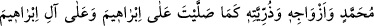
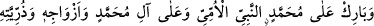
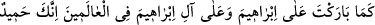
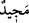
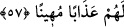

Selâmla geldim, bana cevap ver;
Harap olmuş gönlüme bir merhem koy.
Benim için mevki ve saygı olarak,
Gönderdiğim yüz selâma karşılık “sana da” demen yeter.
Benim iniltimi işit, konuş benimle.
Gözyaşımı gör de tebessüm et bana.
Bana şefâat etmek için dudağını oynat yeter.
Günahıma ve kulluğuma bakma benim.
Kâşifî, tefsîrinde ve Tuhfetu’s-salevât’ta der ki: “Salevâtın keyfiyetine dair çeşitli
hadisler vârid olmuştur. İmam Nevevî şöyle buyurmuştur: “Efdal olan, hadislerin
zikredilen tarîklerini bir araya getirip vârid olan lafızlarını şu şekilde toplamaktır:
“Allâh’ım, kulun ve rasûlün ümmî peygamber Muhammed’e, Muhammed’in
âilesine, eşlerine, zürriyetine, İbrâhim’e ve İbrâhim âilesine salât ettiğin gibi salât
et. Ümmî peygamber Muhammed’i, Muhammed’in âilesini, eşlerini, zürriyetini,
İbrâhim’i ve İbrâhim âilesini bütün âlemlerde mübârek kıldığın gibi mübârek kıl.
Çünkü sen hamde layık ve pek yücesin.”
57. Allah ve Rasûlü’nü incitenlere Allah, dünyâda ve ahirette lânet etmiş ve
onlar için horlayıcı bir azap hazırlamıştır.
“Allah ve Rasûlü’nü incitenlere Allah, dünyâda ve âhirette lânet etmiş” rahmetinden
kovmuş ve uzaklaştırmıştır. Artık onlar dünyâda da âhirette de Allâh’ın rahmetine nâil
olamazlar. Bununla beraber âhirette onlara ulaşacak ve onları horlayıp izzet ve
kibirlerini yok edecek “bir azap hazırlamıştır.”
Allah Teâlâ hakkında incinme muhâl/imkansızdır. Dolayısıyla onların Allâh’ı